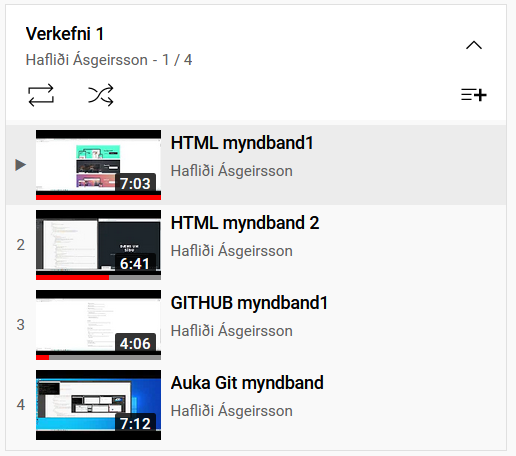
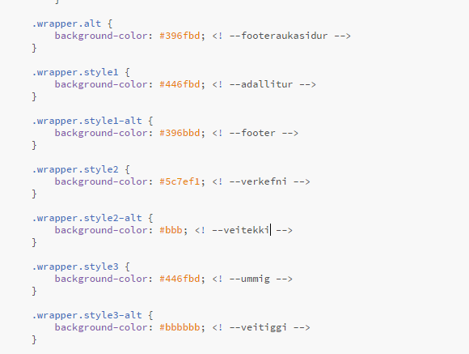
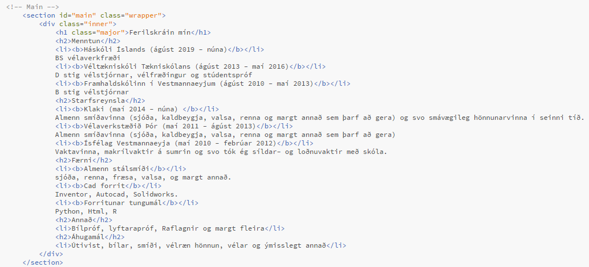

Verkefni 1
Verkefni 1 var að nota html til þess að útbúa vefsíðu þar ég mun síðar setja verkefni áfangans inn.
Ég byrjaði á því að skoða video sem að kennarinn hafði sett inn á youtube, þetta voru mjög góð videó sem að útskýrðu vel fyrir mér hvað ég þurfti að gera.
Næst downloadaði ég brackets og lagði svo leið mína inn á snilldarlega síðu sem heitir html5up.net og fann mér síðuform sem mér líkaði ágætlega. Svo breytti ég litum síðunnar í css kóðanum
Ég ákvað að næsta verk yrði að skrifa ferilskránna og breytti þá generic síðunni og skrifaði þar stutta ferilskrá og tengdi hana við ferilskrá hnapp undir svæði þar sem ég skrifa nokkur orð um mig.
Svo fór ég index síðuna og setti hana upp á íslensku og gerði hana að minni eigin. Ég ákvað að setja inn verkefni 1-5 bara svo að síðan yrði ekki rosalega tómleg, og setti að sjálfsögðu upp tímabundna síður fyrir verkefni 2-5. Að lokum setti ég síðuna upp á github. sem að tók að vísu gífurlegan tíma, því ég og git erum ekki vinir.